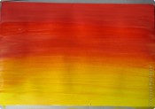
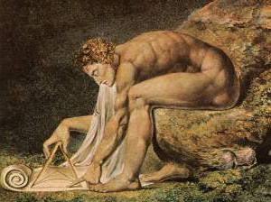
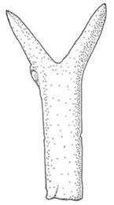
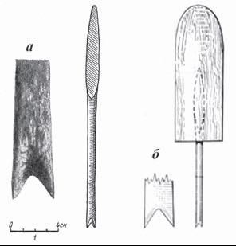
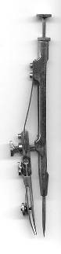
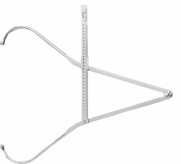
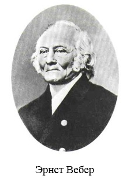
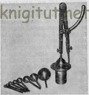
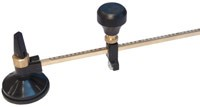

Творческая мастерская каждого учителя по-своему уникальна. В деятельности каждого педагога возможны свои открытия, интересные находки и темы для рисования.
Сочетание интересных и новых приёмов, методов, форм обучения и контроля на уроках позволяет решать задачи развития и воспитания учащихся, создавая в классе особую атмосферу спокойствия, доверия, увлечения и сотворчества.
И одной из увлекательных техник для учеников я считаю «Тинга-тинга».
Тинга-тинга – это стиль африканского искусства, где все изображения как будто выполнены детской рукой. Появилась она в 60-х годах в Танзании в Восточной Африке. Эта техника носит название «Тинга-тинга» по имени основателя – африканца Эдуарда Саиди Тингатинга, из племени Макуа.
Возьмем лист бумаги. Сначала выполним фоновую растяжку цвета.
Рисуем три полосы гуашью: красную, оранжевую и желтую. Мокрой кистью делаем цветовую растяжку, т.е. плавный переход от красного до желтого. Продольными движениями кисти.
Далее даем возможность фону высохнуть.
Вообще для фона можно использовать любые оттенки.
Когда фон подсох, можно творить дальше. А дальше можно рисовать что вам захочется, но черной краской. Рисуем силуэты, не вдаваясь в подробности. Это могут быть силуэты деревьев, цветов, животных.
Например, антилопы, туканы, жирафы, пальмы, лианы, тропические цветы.
После того, как черная гуашь высохнет, оживляем замечательные работы. Поработаем над мелкими деталями. А именно украсим белым цветом получившиеся силуэты.

Рисунок в технике «Тинга-тинга» готов. Желаю творческих успехов!
Тема: Рисование на тему «Космос»
Автор: Суюндукова Юлия Рафаиловна, учитель ИЗО, высшая категория
Цели: Создать условия для выполнения творческих работ на тему « Космос»
Задачи:
Образовательные:
-Познакомить обучающихся с понятием «космический пейзаж» -Формировать умение выполнять рисунок на тему «Космос» .
Коррекционные :
-Развивать навыки составления композиции на тему «Космос», умение последовательно вести работу над творческой работой, творческое воображение, умение видеть и понимать прекрасное в космическом пейзаже. -совершенствовать пространственную ориентировку детей в листе бумаги. -Развивать навыки работы в парах.
Воспитательные:
-Воспитывать чувства прекрасного, стремления и умения видеть красоту в пейзажах , гордости за свою Родину.
Оборудование альбомы, кисти, проектор, презентация «Космос глазами художников», шаблоны для конструирования ракеты, раздаточный материал для работы в парах (по клеткам),звезды для рефлексии, образцы рисунков.
Тип урока: комбинированный(повторение, сообщение новых знаний + практикум)
Вид урока: тематическое выполнение творческих работ
Орг. момент.
1.Приветствие.-Здравствуйте,сегодня урок изобразительного искусства проведуя ,меня зовут Юлия Рафаиловна.
2.Проверка готовности к уроку
-Все ли готовы на урок , хорошо, молодцы!
Постановка проблемы и цели урока. Мотивация учебной деятельности.
-Ребята, закроем глаза.(включаю космическую музыку ,затем звук взлета ракеты) - Откройте глаза, что вы представили пока звучала музыка?(ответы детей) - Ребята, этот предмет сохранился еще со времен Советского союза, вы посмотрите и скажите к какому знаменательному событию он посвящен и как это связано с 2021 годом?(показ светильника в форме земного шара с взлетающей ракетой) (ответы детей) -Как вы думаете, чему мы посвятим наш урок? (Космосу)
Актуализация знаний
-Все знают Алексея Леонова . Кто он?(первый человек ,который вышел в открытый космос) переход к презентации -Но он был еще и художником. Первый эскиз он нарисовал карандашами на обложке бортового журнала. Он рисовал космос так , как он его видел по-настоящему. Обратите внимание на цветовую гамму. -Посмотрим рисунки детей, как можно изобразить космос.(показ рисунков)
Творческое задание
- Предлагаю выполнить творческое задание. У вас на партах лежат листы с точками. Нужно соединить точки так, чтобы получилась ракета.(выполняют) - Поменяемся работами и проверим друг друга, поставим оценку (взаимопроверка и оценивание). -Готовясь к уроку, меня заинтересовал вопрос как наша Республика Башкортостан связана с космонавтикой.?
1.Есть пещера космонавтов 2. Наша Республика славится медом. И вот уже более 15 лет Башкортостан поставляет на орбиту этот полезный продукт и дают космонавтам в качестве дополнительного питания. 3.Только в наших санаториях после полетов как российские так и зарубежные космонавты поправляют свое здоровье(особенно славится санатории «Красноусольский) 4. С 2011 года проводится Республиканская Олимпиада на кубок Гагарина. Победители и призеры этой олимпиады получают ценные подарки с рук известных космонавтов.
-Перед тем как приступить к творчеству, предлагаю выполнить упражнения для глаз(физминутка для глаз)
Самостоятельная творческая работа учащихся
-Ребята, мы выполним несколько творческих работ на космическую тему
Мне нужны ребята, которые поработают за ноутбуками ,а также кто хочет поработать с бумагой (Ребята работают в группах)
Подведение итога урока
-Посмотрим, как вы справились -Пожалуйста, ребята (демонстрируют) -Конструкторы, все ли у вас получилось? -Посмотрим ваши 3д изображения! -Молодцы!
Рефлексия.
- В завершении урока устроим звездное небо,выберите одну Зеленая- урок понравился, рисунок получился Желтая-что-то не получалось Красная -мне было скучно ,ничего нового не узнал -Хорошо, ребята, спасибо за урок! -Что мы учились с вами рисовать на уроке?
Введение…3
Глава 1. История циркуля…5
§ 1. Кто придумал циркуль…5
§ 2. Первые железные циркули…6
Глава 2. Современные циркули…8
§ 1. Основные виды циркулей…8
§2. Строение циркуля...9
§ 3. Циркули в медицине...10
§ 4. Циркуль в навигации и картографии…11
§ 5.Циркули на производстве…12
Глава 3. Геометрические построения с помощью циркуля…14
§ 1 Деление окружности на равные части…14
§ 2 Построения с помощью одного циркуля…18
Глава 4. Необычные назначения циркуля…19
Глава 5. Анкетирование учащихся начальных классов, обработка
результатов…22
Заключение…23
Список используемой литературы…24
Приложение…25
Две ножки, как они похожи: одна упрямо крутится на пальчике носка.вторая, кружится вокруг, рисуя грань графитом белый лист деля, на ТО, что ВНЕ и что ВНУТРИ.. . но как ты на окружность не смотри ты не увидишь где начало, а только центр.. . от конца иглы.. . а тайна циркуля лишь в том.. . что чертит линию не ОН.. . а тот, КТО сверху крутит им...
На уроках черчения мы выполняем творческие работы с окружностями. Меня заинтересовали построения с помощью циркуля и сама история этого инструмента. Циркуль заинтересовал меня, и свою работу я посвящаю истории происхождения циркуля и возможностям его применения. В центре моего внимания находятся вопросы, связанные с первыми упоминаниями о циркуле, видами циркулей, применением циркулей в различных областях науки и культуры. Значительное внимание я уделила геометрическим построениям с помощью только одного циркуля. Я доказала, что при помощи только одного циркуля можно создавать разные рисунки.
На мой взгляд, выбранная тема очень интересна и актуальна, ведь мы используем циркуль во многих науках и по сей день. Он знаком каждому человеку со школы - на уроках черчения и геометрии нельзя обойтись без этого инструмента для построения окружностей и дуг, на уроках географии для измерения расстояний. С циркулем можно встретиться и на уроках истории при изучении гербов и символов. А построения с помощью циркуля развивают пространственное воображение и помогают развить логику мышления.
Гипотеза: умение пользоваться циркулем и использовать его в различных областях повседневной жизни, способствует не только совершенствованию предметных знаний, но и творческому развитию личности.
Задачи исследования:
1) изучить историю возникновения циркуля;
2) определить основные области применения циркуля как инструмента;
3) оценить возможности применения циркуля при выполнении творческих работ;
4) доказать, что достаточно только циркуля, чтобы создавать множество красивых и необычных работ;
5) создать буклет о циркуле.
Объект исследования:
циркуль обыкновенный.
Предмет исследования:
использования циркуля в различных областях жизнедеятельности человека.
Слово «циркуль» происходит от латинского circulus - «круг, окружность, кружок», от латинского же circus - «круг, обруч, кольцо». В русский язык циркуль или «циркул» пришел от польского cyrkuɫ или немецкого Zirkel.
Персонаж древнегреческой мифологии, Дедал, был потомком царя Эрехфея. Он считался искусным строителем, художником и изобретателем. Согласно легенде, к числу изобретений Дедала относятся основные столярные инструменты: рубанок, отвес, клей.
У Дедала в Афинах жил племянник по имени Талос, очень талантливый юноша. Когда Талосу исполнилось всего 12 лет, он придумал гончарный круг, с помощью которого люди стали изготовлять посуду. Скелет рыбы навел его на мысль сделать первую на свете пилу. Дядя Талоса позавидовал его таланту и, улучив момент, столкнул юношу с городского вала. Но до этого Талос успел одарить людей еще одним изобретением. Он соединил с помощью шарнира два одинаковых по длине стержня — так получился циркуль.
На стенах и куполах храмов и домов, на резных чашах и кубках древних Вавилонии и Ассирии нарисованы такие правильные круги, что без циркуля их просто невозможно провести. А существовали эти государства около 3 тысяч лет назад. Самый старый циркуль, дошедший до нас уже не из легенды, а из реальности. Железный циркуль нашли во Франции при раскопках древнего кургана. Он пролежал в земле более 2 тысяч лет.
Во время раскопок в Помпеях было найдено много древнеримских бронзовых циркулей. Причем в Помпеях найдены инструменты уже совсем современные: циркули с загнутыми концами для измерения внутренних диаметров предметов, «кронциркули» для измерения максимального диаметра, пропорциональные - для кратного увеличения и уменьшения размеров.
При раскопках в Новгороде был найден стальной циркуль-резец для нанесения орнамента из мелких правильных кружочков, очень распространенного в Древней Руси.
Стальной циркуль-резец
Костяные гребни с циркульным орнаментом.
Таким образом, судя по давности изображений, которые невозможно выполнить без некоего подобия циркуля, этому инструменту более 3 тысяч лет. И использовался он в основном для нанесения орнаментов.
Со временем конструкция циркуля практически не изменилась, но ему придумали массу насадок, так что теперь он может вычерчивать окружности радиуса от 2 миллиметров до 60 сантиметров, кроме того, обычный графитный грифель можно заменить насадкой с рейсфедером для черчения тушью.
Есть множество типов циркулей. Одни из них: разметочный или делительный, его применяют для снятия и перенесения линейных размеров.
Чертежный или круговой циркуль применяют для вычерчивания окружностей диаметром до 300 миллиметров.
Пропорциональный циркуль применяют для изменения масштабов снимаемого размера.
Принцип работы циркуля и его строение остался неизменным на протяжении нескольких сотен лет. Современные технологии лишь сделали этот прибор более удобным для использования. В наше время циркуль состоит из таких частей:
- держатель. Самая верхняя часть циркуля. Главное предназначение держателя – не допустить скольжения руки при выполнении чертежа. Поэтому держатели и делают шероховатыми или со специальными выемками для пальцев;
- штанги. Это основная рабочая часть циркуля, его «ноги». Профессиональные чертежники предпочитают циркули, в которых штанги изготовлены из высокопрочных металлов. Это обеспечивает твердость линии и минимальную погрешность при использовании прибора. А для чего нужен циркуль с пластмассовыми или деревянными штангами? В детских и школьных инструментах высокая точность не требуется, поэтому такие циркули могут изготавливаться из пластмассы;
- игла. Должна быть очень прочной и острой, чтобы максимально крепко закрепить циркуль в точке отсчета и снизить вероятность соскальзывания инструмента с чертежа;
- насадки. Обычно насадками выступают грифельные стержни различной жесткости. Чертежник подбирает жесткость грифеля в зависимости от типа выполняемой работы.
Циркуль используется не только в черчении - применение ему нашлось и в медицине: например, большой и малый толстотные циркули применяются для измерения поперечных размеров тела человека и для измерения размеров черепа. А циркуль-калипер используется для измерения толщины подкожно-жировой складки.
Также известен циркуль Вебера, немецкого психофизиолога и анатома, разработанный им для определения порога кожной чувствительности.
Используемый для измерения расстояния на карте, циркуль-измеритель обычно делают из меди со стальными кончиками. Для того чтобы отмечать и измерять расстояния на карте, яхтсмену понадобятся пара измерителей и циркуль. Желательно что бы они были лучшего качества - медные или из нержавеющей стали. Высота измерителей должна быть не менее 15 см, чтобы они широко раздвигались.
Управляемый одной рукой циркуль, который имеет согнутый верх, легче в использовании, чем неизогнутый, который требует две руки, чтобы открыть и закрыть его. Чтобы воспользоваться штурманским циркулем-измерителем, надо взять его так, как показано на рисунке
Яхтсмену надо открыть циркуль в растворе, подходящем к замеряемой площади, затем определить расстояние, используя шкалу широты карты. Если раствор циркуля недостаточно широк, установить его на подходящую ширину.
Циркуль для разметки радиусов от центров готовых отверстий диаметром 10-50 мм с применением шаровых вставок изготовил новатор В. В. Соколов. В одной ножке стандартного циркуля высверливается отверстие диаметром 5 мм, куда вставляются цилиндрические наконечники шаровых вставок. Максимальный радиус разметки 240 мм. Такая конструкция циркуля дает возможность производить разметку радиусов от отверстий (цилиндрических и нецилиндрических) на плоскостях, расположенных под различными углами к оси отверстия.
Применение циркуля с шаровыми вставками экономит на операциях разметки до 25% вспомогательного времени, заметно облегчает труд рабочего.
Циркули предназначены и для резки окружностей различных диаметров. Данный инструмент предлагается в различных модификациях, в зависимости от непосредственной поставленной задачи. Циркули, которые не имеют масляный резервуар необходимо смачивать в масле, чтобы производить качественный разрез и недопускать быстрый износ инструмента.
Так выглядит циркуль для резки стекла с шестью роликами, длина резки примерно 10 000 метров, минимальный диаметр окружности - 85мм, максимальный - 2000мм:
Расстояния на сельскохозяйственных полях можно измерять с помощью полевого циркуля. Расстояние между ножками полевого циркуля делается или 1 м, или 2м.
Чаще всего циркуль используют на уроках черчения. Особенно интересны чертежи на построения с помощью циркуля и линейки. Рассмотрим некоторые из них.
Таким образом, можно сделать вывод, что при помощи одного циркуля можно выполнить различные творческие работы. А такие работы на построений с помощью только одного циркуля – увлекательная и развивающая игра воображения.
Циркуль - не только всем известный инструмент. Этим словом названо маленькое созвездие южного полушария. К сожалению, на территории России это созвездие не наблюдается.
Кроме того, циркуль является символом неуклонной и беспристрастной справедливости, совершенной фигурой круга с центральной точкой, источником жизни. Наряду с квадратом циркуль определяет пределы и границы прямой линии
У китайцев циркуль означает правильное поведение. Циркуль - атрибут Фо-хи, легендарного китайского императора, считавшегося бессмертным. Сестра Фо-хи имеет квадрат, и вместе они - мужской и женский принципы, гармония инь и янь.
Циркуль, совмещенный с угольником - одна из самых распространенных эмблем, символов и знаков масонов. На этой эмблеме циркуль символизирует Небесный Свод, а угольник - землю. Небо в данном случае символически связано с местом, где чертит план Великий Строитель Вселенной. Буква «G» в центре в одном из значений - сокращение слова «геометр», используемого в качестве одного из названий верховного существа.
На купюре 50 германских марок выпуска 1989 г., рядом с портретом немецкого архитектора Бальтазара Неймана (1687–1753) помещено изображение пропор¬ционального циркуля– основного инструмента зодчего тех времен.
В XX веке циркуль часто встречается как символ знания в гербах поселений, учебных заведений и предприятий. В социалистической символике циркуль ассо¬циировался с трудовой интеллигенцией. В фондах Государственного центрального музея современной истории Рос¬сии хранится Знамя, подаренное Орехово-Зуевскому уездному комитету РКП(б) рабочими Дулевского фарфорового завода к 25-летию партии. Рядом с крестьянкой, держащей сноп, мы видим рабочего на фоне дымя¬щего завода, с шестернёй и циркулем – символом трудового разума. Сохранились многочисленные образцы местных денег периода первых после¬революционных лет, украшенных в том числе и изображением циркуля.
В июле 2010 года в Миассе (город в составе Челябинской области, России (с 1926). Основан в 1773, входит в число исторических городов России.) открылся Парк гигантской канцелярии. Организаторы установили на пьедесталы огромные ножницы, линейку, скрепку, циркуль и кнопку. Фигуры уже претендуют на то, чтобы попасть в Книгу рекордов Гиннеса. Например, циркуль весом 154 килограмма достигает в длину 4 метров. Возле каждого экспоната расположен стенд с информацией о мастере, а также об истории предмета – кто и когда его изобрел, какую роль он сыграл в истории прогресса. Все желающие смогут сфотографироваться на фоне гигантских «канцеляризмов». Миассцы ожидают, что их фигуры попадут в знаменитую книгу рекордов.
Таким образом, изучая значения изображений циркуля на различных предметах, можно сделать вывод, что оно является символом предмета черчения, умственного труда и правильного поведения.
Перед поиском информации о циркуле мы провели анкетирование учащихся 4 класса нашей школы. Участвовало 23 ученика .Им были заданы следующие вопросы: 1.Что такое циркуль? 2. Умеете ли вы пользоваться циркулем? 3. Кто изобрел циркуль? 4. Можно ли при помощи только одного циркуля создавать рисунки?
На первый вопрос нашей анкеты: Что такое циркуль? Мы узнали, что все ученики знают ответ на наш вопрос.
Со вторым вопросом нашей анкеты: Умеете ли пользоваться циркулем? Только 5 учеников умеют пользоваться циркулем, что составляет 21 %.
На третий вопрос нашей анкеты: Кто изобрел циркуль? Мы не получили ни одного правильного ответа!
С четвёртым вопросом: Можно ли при помощи только одного циркуля создавать рисунки?
Мы получили большинство отрицательных ответов, что составило 80%.
Можем сделать следующий вывод, что учащиеся в основном знают, что такое циркуль, а пользоваться им не умеют, и не знают кто изобрел циркуль. Даже сомневаются, что при помощи только одного циркуля можно создавать рисунки.
Итак, изучив журналы, публикации в Интернете и просто учебники, я познакомилась с историей и различными способами применения, казалось бы, такого маленького, невзрачного предмета, как циркуль. Но какая у него история! Получилось что, занимаясь этой исследовательской работой, я изучила ряд вопросов из истории мировой культуры, вопросы из медицины, навигации, астрономии и даже производства. А, выполняя построения с помощью циркуля , я наблюдала красоту и эстетику творческих рисунков и чертежей. При этом я узнала много новых интересных фактов о циркуле. Я показала, как можно выполнить красивые работы при помощи циркуля. Также выяснила, проведя анкетирование в начальных классах, что учащиеся мало знают о циркуле и его применении.
Я узнала, что в космосе есть созвездие Циркуля, неформальное общество масонов поклоняется этому предмету, его изображение присутствует на гербах и монетах.
Таким образом, я могу сделать вывод:маленькое изобретение Талоса циркуль, оказалось таким полезным, что нашло свое применение и в науке и в культуре. Циркуль до сих пор служит нам верой и правдой, помогая строить, измерять, производить продукцию, понимать и принимать культурное наследие человечества, и просто любоваться ...
Таким образом, моя гипотеза полностью подтвердилась.
А многими школьными «вещами» (транспортир, линейка) мы пользуемся постоянно но, к сожалению, мало о них знаем. Поэтому я предлагаю всем найти ещё что-нибудь интересное и необычное о различных школьных предметах. Возможно вы тоже пополните свои знания интересными фактами, сделаете немало открытий и полюбите черчение еще больше.
1. "Геометрия 7-9", Анатасян Л.С. и др., М.: Просвещение, 2009 г. 2. Геометрия. Дополнительные главы к школьному учебнику 9 класса, Анатасян Л.С. и др. М.: Просвещение, 2007 г. 3. Занимательная геометрия. Я.И. Перельман, М.:АСТ: АСТРЕЛЬ,2007 4. Наглядная геометрия: пособие для общеобразовательных учебных заведений / Н.Ф.Шарыгин, Л.Н. Ерганжиева. М.: Дрофа, 2012 5. Научно-методический журнал «Полином» № 3/2009 г. 6. "Математика", приложение к газете "1 сентября", №21, 1999 г. 7. Энциклопедия для детей. Математика. Под ред. М.Д. Аксенова М.:Аванта +, 2004 г. 8. Интернет-журнал «Циркуль», http://cirkul.info/article/istoriya-tsirkulya. 9. «Кто изобрёл чертёжные принадлежности?» 10. Библиотека интересной научной литературы knigitut.net. http://knigitut.net/1/3-1.htm. 11. Интернет-проект «Задачи»